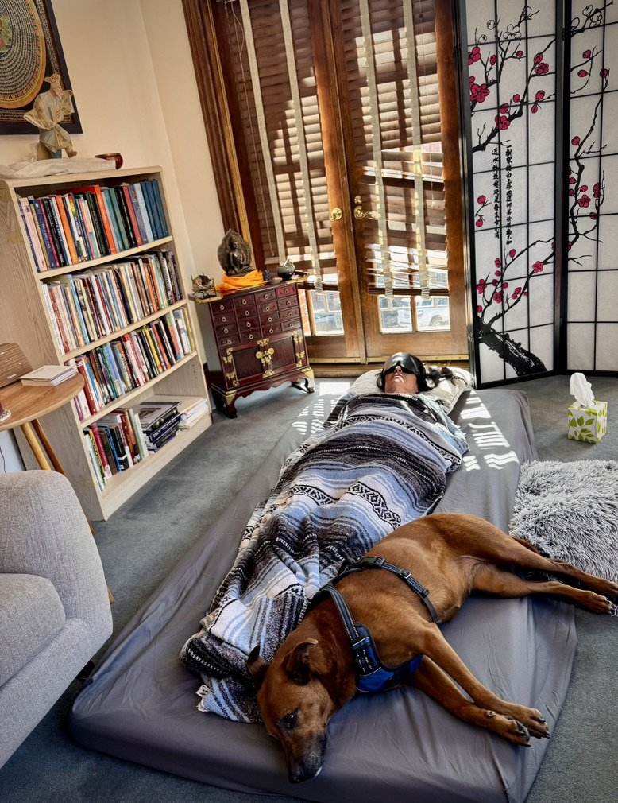

An Ancient Practice, Reborn
Psilocybin-assisted therapy is at once both an emerging and deeply ancient modality for healing & transformational growth — combining modern evidence-based psychology with time-honored ceremonial and contemplative traditions.
Used intentionally and responsibly, psilocybin has shown significant promise in helping people heal from Anxiety, Depression, Addiction, OCD, and existential distress — while also supporting a deeper connection to meaning, purpose, and one's true nature.
It has also been shown to increase creativity and can lead to personal breakthroughs and lasting transformation. This area has been less well studied scientifically, but more scientists and experts in the field are now speaking of the betterment of well people — meaning that many people without significant mental health issues have found profound insights and benefits, including a connection with spirituality, through supported, intentional use of psilocybin.
My approach to psilocybin-assisted work is grounded in trauma-informed psychotherapy, meditation, yoga, breath work, and ceremonial and shamanic frameworks — with an emphasis on preparation, safety, integration, and respect for the intelligence of the psyche.
What the Research Shows
Over the last decade, rigorous scientific research has brought psilocybin into the mainstream of mental health conversation. Peer-reviewed studies from leading institutions have demonstrated that psilocybin, when used in carefully structured therapeutic settings, can lead to rapid and sustained improvements in mental health outcomes.
Research findings include:
- Depression: Studies published in The New England Journal of Medicine and JAMA Psychiatry show psilocybin to be as effective — or more effective — than conventional antidepressants for treatment-resistant depression.
- Anxiety & End-of-Life Distress: Clinical trials at Johns Hopkins and NYU have demonstrated significant reductions in anxiety, fear of death, and existential distress.
- Addiction: Promising results show reduced alcohol, nicotine, and opioid dependence, with lasting behavioral change linked to meaningful insight rather than willpower alone.
- Neuroplasticity & Psychological Flexibility: Psilocybin appears to temporarily loosen rigid thought patterns, allowing new perspectives, emotional processing, and adaptive change.
What stands out most in the research is not only symptom reduction, but increased openness, emotional connection, meaning-making, and spiritual well-being.
How Psilocybin Therapy Can Help
While every person's journey is unique, psilocybin-assisted therapy may support healing in the following areas:
Anxiety & Chronic Stress
- Softening hyper-vigilance and fear-based patterns
- Greater nervous system regulation
- Increased trust in self and life
Depression & Emotional Numbness
- Access to suppressed emotions and grief
- Renewed sense of aliveness and meaning
- Relief from stuck, repetitive mental loops
Addiction & Compulsive Patterns
- Insight into root causes of craving and avoidance
- Reconnection to values and purpose
- Increased self-compassion and agency
Trauma & Developmental Wounds
- Gentle access to difficult material with less overwhelm
- Repair of fragmented inner experience
- Integration of body, mind, and emotion
Spiritual Connection & True Nature
- Experiences of unity, interconnectedness, and non-separation
- Insight into the impermanent nature of the self
- A felt sense of meaning, belonging, and reverence for life
Many clients describe these experiences not as "hallucinations," but as deeply meaningful encounters with their own psyches, family lineage, and spiritual connections.
My Approach: Ceremony, Integration & Inner Work
Psilocybin is not a cure by itself. The medicine works best when held within a strong therapeutic and ceremonial container.
Careful Preparation
We clarify intentions, explore your history, assess readiness, and build inner resources through mindfulness, somatic awareness, and parts-based work.
Ceremonial Framework
Drawing from shamanic traditions, meditation lineages, and yogic philosophy, sessions are held with reverence, structure, and respect for the sacred dimensions of healing.
Trauma-Informed Therapy
I work slowly, collaboratively, and with deep attention to nervous system safety, consent, and pacing.
Integration as the Core
The real work happens after the experience — translating insight into lasting change in relationships, habits, and self-understanding through ongoing therapy and integration sessions.

The medicine opens the door. The therapy is what helps you walk through it — and stay changed once you do.